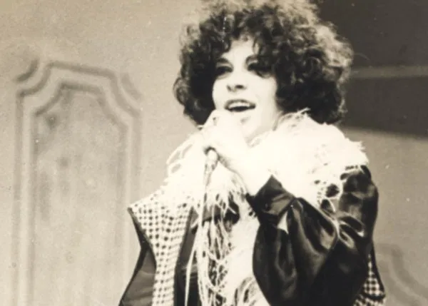
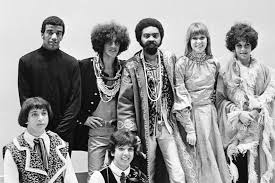

Tropicália foi um movimento cultural brasileiro que surgiu no final dos anos 1960, revolucionando a música, a arte e outras formas de expressão. Misturando influências nacionais e internacionais, o movimento combinava ritmos tradicionais brasileiros, como o samba e o baião, com o rock psicodélico, a música erudita e a cultura pop. Os principais nomes do tropicalismo incluem Caetano Veloso, Gilberto Gil, Gal Costa, Tom Zé, Os Mutantes e o maestro Rogério Duprat. Em 1968, o álbum **"Tropicália ou Panis et Circensis"** serviu como um manifesto do movimento, trazendo letras inovadoras e arranjos experimentais.
Além da música, a Tropicália também influenciou o cinema de Glauber Rocha, o teatro de José Celso Martinez Corrêa e as artes plásticas de Hélio Oiticica. Com sua postura irreverente e crítica à sociedade e à ditadura militar (1964-1985), o movimento foi alvo de repressão. Caetano Veloso e Gilberto Gil foram presos e exilados em 1969.
